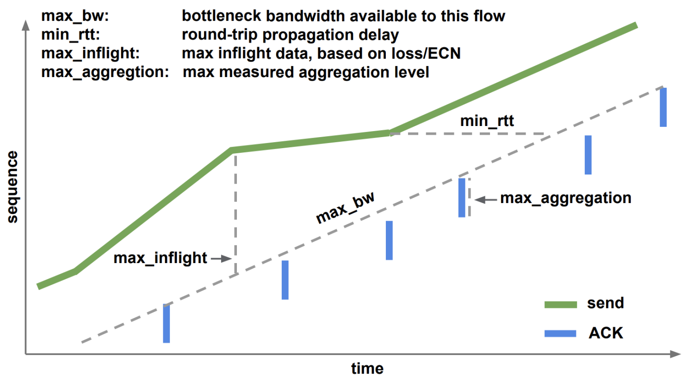

升级 BBRv2拥塞控制算法
BBR(Bottleneck Bandwidth and RTT) 是由谷歌在2016年推出基于带宽和延迟反馈的拥塞控制算法。它可以为互联网流量实现更高的带宽和更低的延迟。
在一些场景特别是4G/5G/WiFi等移动端场景，由于链路层和物理层误码导致的随机丢包会时常出现，而并不意味着链路中出现了负载较高的路由器节点（拥塞）。 而传统的算法如Reno、Cubic，基于延迟或丢包来判断拥塞，这种事件驱动调整拥塞窗户较为被动，特别是带宽时延积较大的情况下，无法充分利用带宽。
BBR介绍
BBR 不再使用丢包作为拥塞的信号，也不使用 “加性增，乘性减” 来维护发送窗口大小，而是分别估计最大BW带宽和最小RTT延迟，把它们的乘积BDP作为发送窗口大小。在同一个网络下，相较于Reno、Cubic，BBR算法能优先抢占资源。
图: BBR增长函数
BBR效率对比
在Google的博客中，有对 BBR vs CUBIC的效果对比：以 YouTube的BBR体验为例。在这里，BBR提高了4%的网络吞吐量，BBR还缩短了网络队列，将往返时间减少了 33%。下表显示了使用不同拥塞控制算法、延迟和数据包丢失参数进行的各种TCP吞吐量测试的完整结果。
图: 各拥塞算法的下载速度对比

BBRv2应用
BBR存在一些问题。首先是失速，DRAIN、PROBE_RTT状态的存在使得发送速率会受到影响。其次是收敛速度过慢。然后是公平性，在BBR和CUBIC共存时会挤占带宽。 BRv2做了一些修正，总体目标是更快更精准的去使inflight能逼近最佳带宽, 同时引入丢包和ECN来控制STARTUP阶段的退出以及inflight的范围，提高公平性等。
图: 各拥塞算法的特性对比

在业内，Youtube、Dropbox、Akamai、爱奇艺、腾讯等均已进行BBRv2的应用。其中Dropbox基于实践发布了较为完整地测评 https://dropbox.tech/infrastructure/evaluating-bbrv2-on-the-dropbox-edge-network 摘录其中的测评结论：
- 对于网速较低的用户来说，带宽可以与CUBIC媲美。
- 对于网速较高的用户来说，带宽可以与BBRv1媲美。
- 丢包率比BBRv1低4倍；但仍然比CUBIC高2倍。
- 传输中的数据比BBRv1低3倍；但略低于CUBIC。
- RTTs较BBRv1低；但仍然比CUBIC高。
- 与BBRv1相比，RTT具有更高的公平性。
总的来说，BBRv2在BBRv1基础上有了很大的改进，而且在需要更高带宽的情况下，它更接近于成Reno/CUBIC的完全替代品。添加实验性的ECN支持，我们甚至可以看到他可以成为Datacenter TCP (DCTCP)的完全替代者。
注： BBRv2目前还属于alpha版，需要编译内核， 如何安装可以在thebyte公众号内搜索《BBRv2使用指南》文章